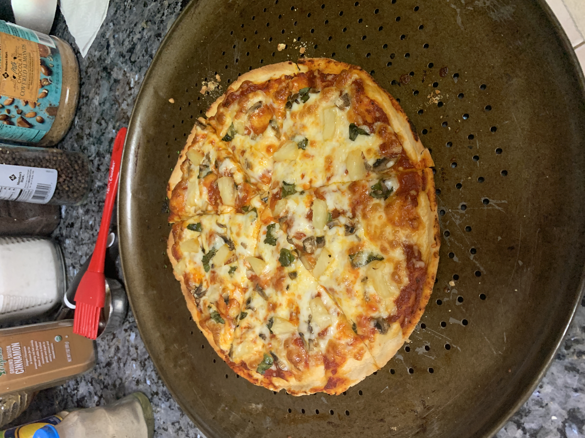
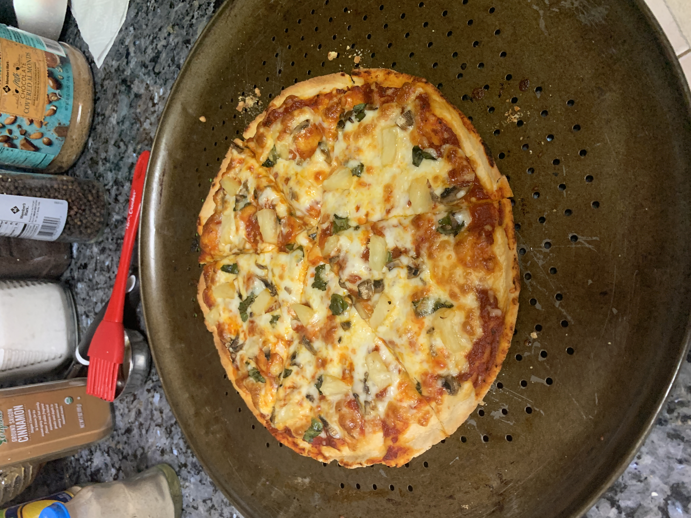
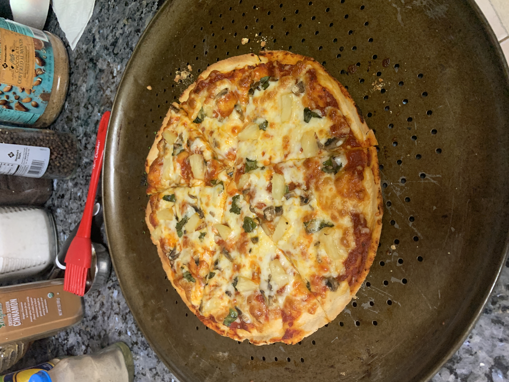

Indroduction: I got interested in cooking during quarantine and my grandma and I have made a lot of very nice dished recently as a result. Here are some recipes for my favorite types of food: pasta and pizza.
Cooking pasta is fairly simple. You have two options, you can either buy ready-to-cook pasta from your local grocery store or pasta shop, or you can make the pasta at home from scratch. Because of the versatility you can achieve in terms of the shapes and the textures with ready-to-cook pasta, I would definitely recommend giving your local pasta restaurant a visit. Making it at home can work but there is a lot more room for error. If you are to insist on making it at home, you can find recipes here.
Once you have the pasta you want to get a pot of water to a boil, add in a teaspoon of salt, and put in your desired serving of pasta. Cook it until al dente (firm and rubbery); this will take around 12 minutes. Make sure that while cooking the pasta, you stir ocassionally and you keep the pasta completely submerged in the water, otherwise it will not cook evenly. After the pasta is cooked to al dente, you want to drain out most of the excess water; ideally, keep about 2 teaspoons of the water in the pasta because that starchy water has good flavor.
At this time, you have a lot of options on how to continue. There are so many different sauces you could use and you can make your own sauce as well depending on what you desire. I made my own sauce with simmered onion and garlic mixed with san marzano tomatoes and some spices. But a much easier option would be to buy pasta sauce from your local grocery story, as they do have plenty of good options. It is fun to experiment with different sauces and see which ones taste the best.
After you put your desired sauce in your desired quantity onto your cooked pasta, you want to work on the garnish and presentation. With most pasta types, black pepper is a must have. The strong flavor of basil works really well with red sauce pasta and spanich/ oregano perfectly compliments an alfredo sauce. Furthermore, cheese and or butter can significantly enhance the texture of the pasta and make it look mouthwatering.
Here are some of the results I achieved:
Basic Recipe for 2 Medium sized pizzas:
Dough:
